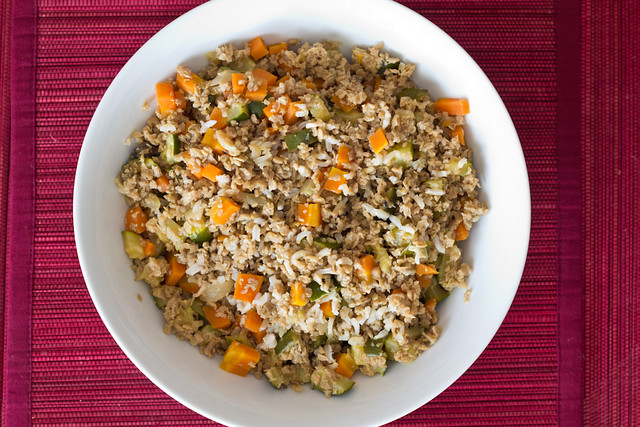
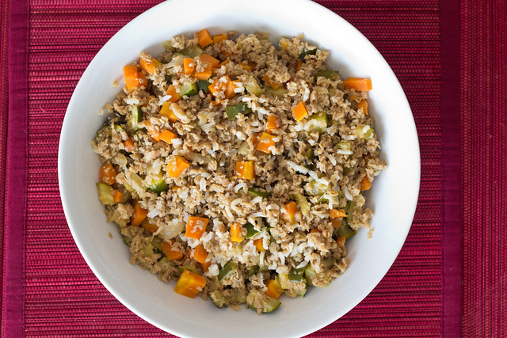

Recetas con soja
 

Tenes poco tiempo?
La soja es un alimento muy completo y nutritivo. Su elevado contenido en proteínas, superior a la de la carne, hace de la soja una fuente proteica vegetal de gran interés dietético y nutricional. Aquí encontrarás gran variedad de recetas con soja y tofu para incluir en tu dieta vegana o vegetariana así que quédate con nosotros y échale un vistazo a nuestras recetas con soja.
La soja es una de las legumbres con mayor valor nutricional, por lo que es muy interesante incorporarla a nuestra dieta habitual. Te proponemos que pruebes con esta receta de albóndigas con soja texturizada. El resultado es unas deliciosas albóndigas muy tiernas, con un sabor muy parecido a la carne, pero 100 % vegetal y que seguro gustarán en casa a los veganos e incluso a los que no lo son.
Recetas
Albóndigas de soja
- 200 gramos de soja texturizada
- 750 mililitros de caldo de verduras
- 2 rebanadas de pan de molde sin corteza
- 5 cucharadas soperas de leche de soja
- 2 dientes de ajo
- 1 rama de perejil
- 150 gramos de pan rallado
- 1 pizca de sal
- 1 pizca de pimienta negra recién molida
- 75 gramos de harina
- 250 mililitros de aceite de oliva
Ingredientes:
- Pon la soja texturizada a remojo durante 1 hora en el caldo de verduras
- Trocea el pan de molde en un bol y riégalo con la leche de soja
- Pela los dientes de ajo y lamínalos. Lava las hojas de perejil, sécalas y pícalas.
- Escurre la soja del caldo vegetal, pásala a un bol más grande y añade el ajo picado, el perejil, un poco de sal y pimienta al gusto.
- Añade el pan rallado al bol y mezcla bien todos los ingredientes.
- Incorpora el pan de molde remojado en leche y mezcla con las manos o una espátula
- Forma pequeñas bolas con la mezcla de soja texturizada. Si la masa está un poco seca, añade un poco del caldo de verduras.
- Enharina cada albóndiga. Deja secar unos 10 minutos y vuelve a enharinar y a adherir con las manos.
- Pon el aceite de oliva en una olla caliéntalo. Fríe las albóndigas. El aceite no tiene que llegar a la mitad de las albóndigas.
Cocínalas durante unos minutos y dales la vuelta con cuidado. - Ve retirando las albóndigas y colocándolas en un plato con papel absorbente para eliminar el exceso de aceite.